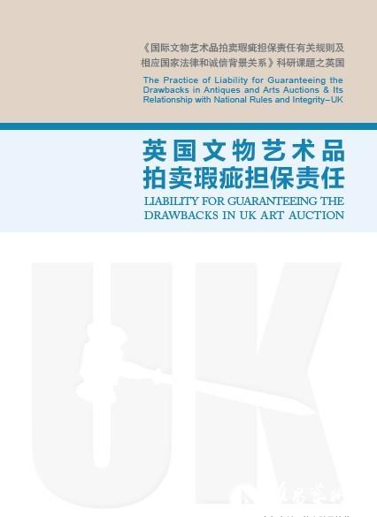

Media Coverage
Exclusive Interview: UK Auction Houses who undertake full Due Diligence are not liable for Lot Defects
Exclusive Interview: UK Auction Houses who undertake full Due Diligence are not liable for Lot Defects

Yuanyuan Tan
Art Asia CEO
UK Research Leader for the China Association of Auctioneers commissioned research topic “Liability for Defects in International Antiques & Arts Auctions and its relationship with National Rules, Laws and Integrity”
On 18 April 2013, Ms Yuanyuan Tan, research leader commissioned by the China Association of Auctioneers to produce the “Liability for Defects in Antiques and Arts Auctions - UK” research report, spoke at the Chinese Antiques & Arts Auction International Forum about liability for defects in the UK auction industry as well as the integrity background underlying the UK’s laws.

“Liability for Defects in Antiques and Arts Auctions - UK” Research Report issued by the China Association of Auctioneers during the Forum
“Liability for Defects in Antiques and Arts Auctions - UK” Research Report issued by the China Association of Auctioneers during the Forum
1. There are currently over 1,500 auction houses whose main or only business is art and antiques auctions
Auction markets have existed in the UK for several centuries; auctioneer licenses have existed since the 13th century and the famous Sotheby’s and Christie’s who laid the foundations of the auction industry were respectively established in 1744 and 1776. There are currently over 1,500 auction houses whose main or only business is art and antiques auctions who employ over 60,000 employees. According to the statistics for the world art market, in 2012 UK art sales amounted to 4.18 billion Euros, accounting for 23% of the world market and ranking the UK third worldwide in terms of art sales.
2. Unlike civil law countries, the UK does not have a specific auction law that covers all legal aspects of auctions
Unlike civil law countries (such as Germany and China), the UK does not have a specific auction law that covers all legal aspects of auctions. Instead, the UK auction industry is covered by various bodies of law, the most of important of which is the Sales of Goods Act 1979, the Misrepresentation Act 1967, the Unfair Contract Terms Act 1977 and the Unfair Terms in Consumer Contracts Regulations 1999.
These laws form the basis upon which all large auction houses draft clauses dealing with auction liability (the liability clause separately signed between the auction house, the buyer and seller). Naturally, given the lack of a specific auction law, the auction liability clauses drafted by each large auction house play an important role in the daily operation of the whole UK auction industry.
The UK’s legal system is inclined towards protecting the consumer, i.e. the buyer in the context of an auction. The Sale of Goods Act 1979 stipulates that a good bought by a consumer must correspond to the description given to it by the seller. The Unfair Contract Terms Act 1977 and the Unfair Terms in Consumer Contracts Regulations 1999 set out that auction houses can only use fair and reasonable means to contract out of certain responsibilities and obligations stipulated in the Sales of Goods Act 1979.
3. UK Auction Industry Organisations draft and publish Codes of Conduct and Practice Guidelines and also mediate everyday disputes that arise amongst their members
The UK has countless local associations and organisations of varying sizes to manage dealers and auction houses, many of which are members of international associations. These associations and organisations draft and publish Codes of Conduct and Practice Guidelines, such as the UK Art Market Union Memo, the UK Art Auctioneer and Valuer Association Guidelines, which are aimed at removing public misgivings and installing confidence in the products they buy. All members must agree to respect these professional rules and also must agree to be subject to the associations’ free mediation services when unexpected disputes occur.
4. UK Auction Houses who undertake full Due Diligence are not liable for Lot Defects
Given that the UK’s legislation is inclined towards protecting the consumer, the auction terms and conditions drafted by each auction house tend towards protecting the rights of the auction house, especially when liabilities and obligations are brought into question due to an unsuitable lot description.
In this research report, we chose to include 16 UK auction houses of varying sizes including Sotheby’s and Christies. Taking Sotheby’s as an example, Sotheby’s states in its clauses that in such situations it only takes on limited liability. The use and operation of the clauses “liability of the bidder and Sotheby’s liability” and “excluding or limiting the auction house’s liability towards the buyer” is worthy of us considering.
“The liability of the bidder and Sotheby’s liability” refers to the fact that as Sotheby’s knowledge of a lot is in part reliant on the seller’s description of it, and Sotheby’s has no way making a detailed and complete investigation and evaluation of the lot, the buyer must itself check the lot. The buyer must also realise that the description and estimation of the lot in the catalogue is a statement of knowledge and not of fact. At the same time, Sotheby’s will apply the principles of reason and caution when preparing the catalogue.
“Excluding or limiting the liability of the auction house to the buyer” refers to whilst taking on basic responsibility, Sotheby’s will not accept any legal liability for any loss caused due to an unsuitable description of a lot. Many other UK auction houses also have such clauses in their terms and conditions. However in certain circumstances these clauses do not have effect for failure to meet the reasonability requirement of the Unfair Contract Terms Act or the fairness requirement of the Unfair Terms in Consumer Contracts Regulations. When the auction house cannot satisfy the requirements of reasonability or fairness, it may reimburse the buyer for their losses, however until the present there still has not been a case in which the buyer has questioned the auction house on such a basis.
It is worth noting that when it is discovered that the lot is a deliberate counterfeit, under stipulated conditions, Sotheby’s should return the buyer their money. This practice is also current amongst other auction houses.